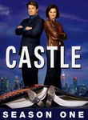
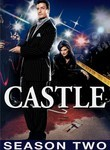
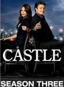

Castle
Stephen Klancher
...has seen 49
...has seen 0.8 hours
...has not seen 2.1 hours

Timeline
Most Recent:
The Final Frontier
First Unseen:
Knockdown (# 47)
...has seen 49
...has seen 0.8 hours
...has not seen 2.1 hours
Timeline
Most Recent:
The Final Frontier
First Unseen:
Knockdown (# 47)


Stephen Klancher: May 1, 2010 
I accidentally watched episode 2 when I tried it almost a year ago... so I'm being convinced to watch the series, but it's not a hard sell because it's Mal.
Stephen Klancher: July 30, 2009
Decent... I don't feel drawn to watch more, but I suppose I rarely do when I first see a series. It is an excuse to see more of Mal though.
Stephen Klancher: May 2, 2010
I always enjoy a "Too soon?" line. And "polling his constituency" as innuendo.
Stephen Klancher: May 5, 2010
Before this point the series has mostly been, "ooo, it's Mal!" This is the first episode where I think "ooo, it's Castle." The humor was good and they did a little more character exposition with Beckett talking about her past. Not that it was anything particularly interesting, but it facilitates deeper character interaction which will be fun.
Stephen Klancher: May 14, 2010
I feel like they've hit their stride as the episodes are starting to be consistently fun.
Stephen Klancher: May 17, 2010
Solid episode. Introducing Beckette's ex as an obsticle to the main characters being together seems kinda formulaic but, whatever, it works. Nice guest performance by Carla from Scrubs (Judy Reyes).
Stephen Klancher: May 18, 2010
Nathan Fillion doing a Christopher Walken impression is fun. Alexis is cute. The moment they cut at the end of the episode was perfect.

Stephen Klancher: June 12, 2010
Strangers on a Train style murder. Also: Shh, the body is talking to me. ...What's it saying? I got shot!
Stephen Klancher: June 13, 2010
Seemed like a clumsy episode until the confession and joking around near the end.
Stephen Klancher: June 27, 2010
Good episode. Liked the "phone call at the same time" scene forcing them to stay together...
Stephen Klancher: July 2, 2010
The Firefly reference in the beginning was part of how I was convinced to watch this series. "Didn't you wear that five years ago?" "Yeah but I like it!" Good episode overall. Giving Nathan Fillion the chance to act a little weird is totally the way to go.
Stephen Klancher: July 18, 2010
I like the family mystery element in this. Also seeing the Captain play a more involved role in the story.
Stephen Klancher: July 22, 2010
Good episode. They managed to do a good job with the return to the topic of the murder of Beckette's mother. And Johnny Vong was pretty funny.
Stephen Klancher: July 23, 2010
Nothing to do with this episode specifically but Ryan and Esposito are a lot funnier as time goes on. Takes a while for sidekicks I guess.
Stephen Klancher: July 24, 2010
The "how do you know?" jokes with Beckette in the beginning were great.
Stephen Klancher: August 14, 2010
Sure Starbuck likes Anders now, but she'll come back to Apollo. Um, I mean Beckett, Demming, and Castle.
Stephen Klancher: August 15, 2010
Awww, sad. Although it's the rule of TV series that the main characters can't be together. Once they are there must be a spectacular breakup or the series ends.

Stephen Klancher: October 20, 2010
Cute love story element. And Beckette would break Castle out of jail... aww, how romantic.
Stephen Klancher: January 20, 2011
The Beckette imitation scenes were pretty fun.
On why he didn't sleep with the character he wrote, based on her, played by Natalie: "it's way too meta." Also Ryan, "we should have a code word so we know which Beckette to kill when the clone army comes."
On why he didn't sleep with the character he wrote, based on her, played by Natalie: "it's way too meta." Also Ryan, "we should have a code word so we know which Beckette to kill when the clone army comes."

Stephen Klancher: September 20, 2011
Whew, that was more serious than last time I watched this series in the middle of 3rd season. I guess the first and last episodes of a season tend to be serious... I might have to go back and watch the previous ones at some point.
Stephen Klancher: November 7, 2012
Shiney! "I'm a fan of good sci-fi: Star Trek, Battlestar, 'That Joss Weadon show'..." Quark! Even though I don't think I've ever seen him out of character I recognized Armin Shimerman by his voice. And Shatter's music!